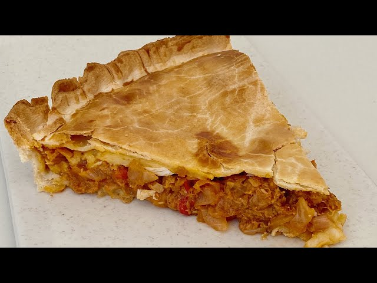

Tarta de atun
Click here to go back to recipe's

This is like the tarta that my hermano Pablo like to do.
- Make the filler with atun, onion, egg, and other tasty things.
- Make the tarta, use a lot of filler. It has to be juicy.
- Cook with the oven.
- Serve the tarta. Everyone will love it.